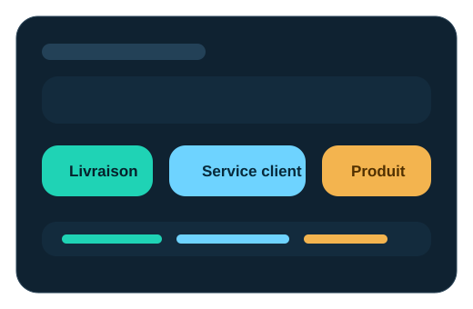
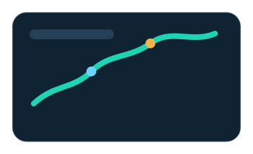
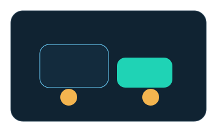

Pourquoi la plateforme existe
Une couche d'intelligence entre le feedback brut et l'action metier.
Les reviews clients contiennent une information precieuse, mais elles arrivent sous une forme difficile a exploiter rapidement. Review Insights+ structure ce flux pour faire emerger des priorites claires, des irritants recurrents et des signaux utiles pour la decision.
Faire emerger le signal utile
La plateforme isole les sujets critiques dans le bruit des reviews et produit une lecture immediately actionnable.
Orienter les bonnes equipes
Livraison, service client ou produit: chaque signal peut etre attribue au bon perimetre de responsabilite.
Passer du POC a l'exploitation
L'architecture est pensee pour supporter l'API, le batch, la supervision et une trajectoire MLOps claire.
Fonctionnalites principales
Ce que fait concretement Review Insights+.
Analyse thematique multi-sujets
Le moteur identifie les dimensions metier les plus critiques d'une review: livraison, service client et produit. Une meme review peut activer plusieurs themes.
- Detection thematique explicite
- Score de confiance par theme
- Evidence hints pour la lecture metier

Sentiment global et par theme
Une lecture globale est combinee avec une analyse specialisee par theme pour distinguer un probleme logistique d'un probleme produit.
Human review pour les cas ambigus
Les cas a faible confiance ou trop melanges sont automatiquement marques pour revision humaine.
API, UI et exports batch
La meme logique est disponible via interface, endpoint d'analyse et enrichment de dataset CSV/JSON.
Sortie actionnable
La reponse inclut theme, sentiment, confiance, evidence et texte actionnable pour accelérer la prise de decision.
Architecture du produit
Une architecture modulaire, lisible et reelle.
Review Insights+ n'est pas une simple interface connectee a un modele. La plateforme repose sur une orchestration explicite des entrees, des schemas, du service metier, des modeles et des sorties de supervision.

1. Input layer
API FastAPI et interface Streamlit pour l'analyse interactive, l'usage demo et l'exploitation batch.
2. Contract layer
Schemas Pydantic, validation des payloads, normalisation des datasets et preparation des exports.
3. Service layer
ReviewAnalysisService orchestre la selection du backend, l'inference,
l'evaluation, le monitoring et le formatage de la sortie.
4. Inference layer
Un modele thematique detecte les sujets actifs, puis des modeles de sentiment specialises par theme affinent la lecture.
5. Ops layer
Healthcheck, metrics runtime, evaluation offline, CI, Docker, versionnement d'artefacts et page de presentation.
Pipeline de traitement
Comment une review devient un insight.
Exploitation et gouvernance
Une base technique credible pour l'industrialisation.

Monitoring et evaluation
Le produit expose un healthcheck, des metrics runtime et une evaluation offline pour suivre la qualite et l'usage.
Securite et controle
API key optionnelle, trusted hosts, CORS, payload limits et headers de securite assurent un socle propre.

Delivery et reproductibilite
Docker, compose, GitHub Actions et artefacts versionnes rendent la plateforme relancable et deployable.